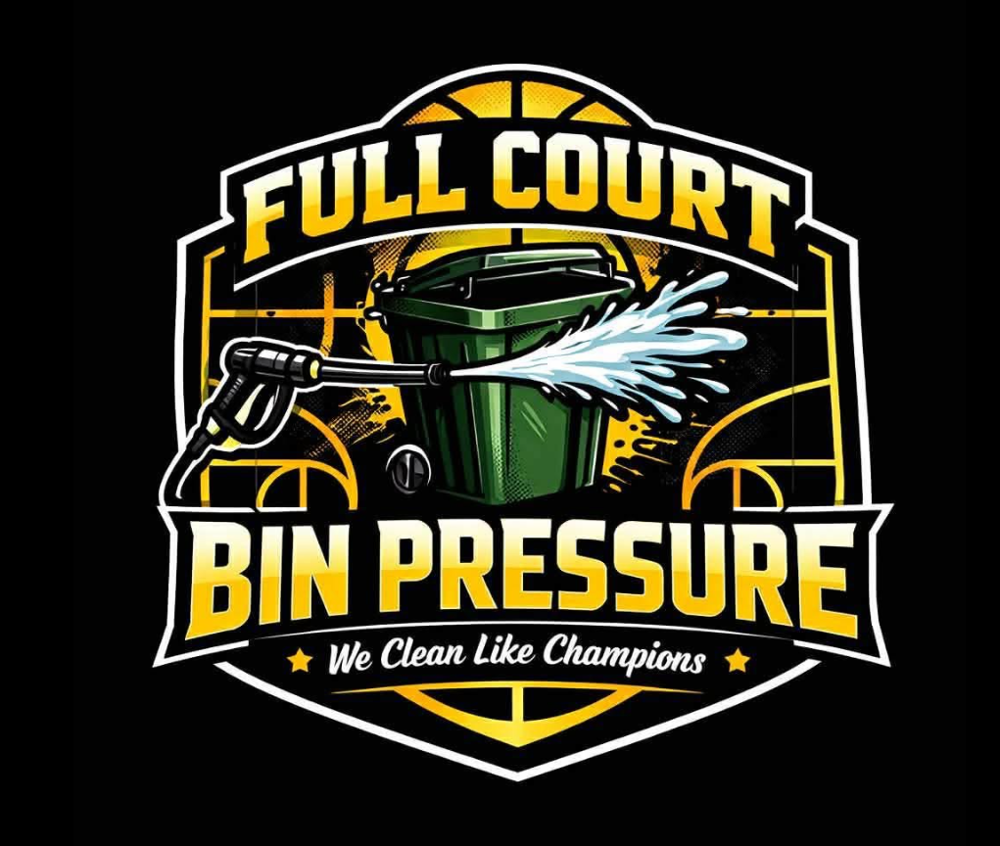

📞 (859) 421-5749About Us
Full Court Bin Pressure provides reliable trash bin cleaning and pressure washing services.
Our Story
As a former athlete, I understand how difficult it can be to balance a summer job with the time and dedication required to improve during the offseason. Every workout, practice, and training session matters—but so does earning money.
That's why I created Full Court Bin Pressure. Our mission is to provide local student-athletes with flexible summer employment that allows them to earn income while still having the opportunity to train, condition, and prepare for their upcoming sports seasons.
By providing professional trash bin cleaning and pressure washing services throughout Central Kentucky, we're building more than a business—we're building opportunities for young athletes to develop responsibility, leadership, discipline, and a strong work ethic that will benefit them long after their playing days are over.
Every job we complete helps create meaningful employment for hardworking student-athletes while delivering the professional service our customers deserve.
Why We Do What We Do
Every service helps provide flexible employment for local student-athletes so they can continue training while earning money during the offseason.
From trash bins to driveways and sidewalks, we use professional equipment to leave every property cleaner, fresher, and safer.
We're proud to serve Central Kentucky while creating opportunities that positively impact local families and young athletes.
Our Mission
Receive professional trash bin cleaning and pressure washing that improves curb appeal, removes odors, and keeps your property looking its best.
Your support creates meaningful summer employment that allows athletes to earn money while continuing to develop their skills and prepare for their seasons.
Every service strengthens our local community by investing in hardworking young people and teaching valuable life skills through honest work.
Request your free quote today.